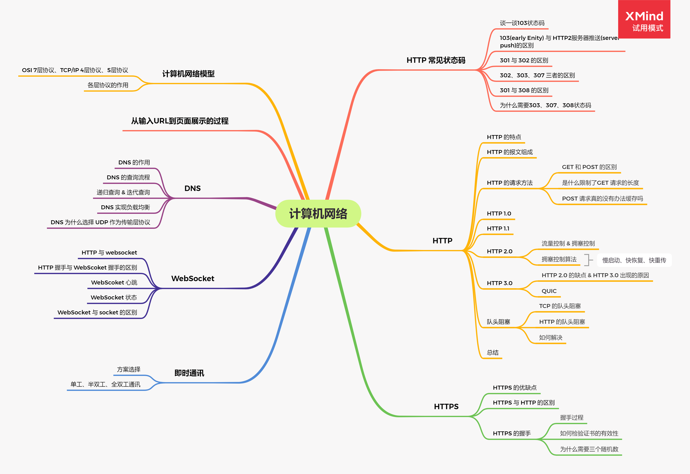

计算机网络

网络协议分层
OSI模型(七层)
物理层: 传输单位比特(Bit)，利用网线、光纤等实现比特流传输数据链路层: 传输单位帧；通过MAC确保信息的可靠传输；对数据传输进行同步，识别错误和控制数据的流向；数据链路层关心的是如何把数据发送到本地网络中去网络层: 传输单位报文；网络层的功能主要包括寻址、路由、分段和重组；网络层关心的主要是如何把数据从一个设备发送到另一个设备，负责在源和终点之间建立连接(IP)传输层: 传输协议TCP、UDP；提供了数据传输的服务(端对端或者主机对主机)会话层: 会话层的作用是为创建、管理和终止会话；实现两个程序之间的逻辑连接表示层: 数据的表示；实现数据的转换、压缩和加密应用层:DNS和HTTP都是工作在应用层还有以下的协议也是工作在应用层
网络接口层: 对应OSI模型的物理层和数据链路层网络层: 对应OSI模型的网络层传输层: 对应OSI模型的传输层(TCP/UDP)应用层: 对应OSI模型的会话层、表示层和运用层
TCP、UDP
TCP、UDP的特点
TCP是面向连接的传输层协议，是可靠的、基于字节流的UDP是一个无连接的传输层协议1
2
3面向连接是指需要三次握手建立连接
可靠性是指通过应答(ACK) 和 序列号来实现可靠传输
基于字节流是指: UDP 是将一条用户消息发送一个完整的UDP报文；TCP 是根据滑动窗口大小将用户消息拆分成多个TCP报文来发送(TCP将数据当做字节流来处理)TCP、UDP的区别
TCP是面向连接的；UDP发送消息之前是不需要创建连接的TCP是可靠的，保证数据是正确且有序的；UDP可能会丢包或乱序TCP是基于字节流；UDP是基于报文的，并且网络拥塞时不会使得发送速率降低TCP的首部开销大，最小20字节最大60字节；UDP的头部开销小，只有8字节TCP是一对一的；UDP支持一对一、一对多TCP的可靠性
序列号:TCP给每一个包一个序号，确保接收端按序接收应答ACK: 接收端在接收到一个包后会向服务器发送个ACK，服务器在一个往返时间内没有收到应答会立即重传流量控制: 通过控制发送的速度来缓解接收端的拥塞拥塞控制: 当网络出现拥塞的时候，TCP能够减小向网络发送数据的速率和数量，缓解拥塞流量控制 和 拥塞控制的区别
流量控制是作用与接收者的，是通过控制发送者的发送速度从而使得接收者能够接收，防止丢失数据包拥塞控制是作用与网络的，是为了防止过多的数据注入网络中，避免了网络负载过大的情况流量控制机制 & 滑动窗口
TCP需要将发送的数据放到发送缓冲区；将接收的数据放到接收缓冲区流量控制是为了让发送端能够根据接收端的接收能力来控制发送的数据TCP通过滑动窗口来实现流量控制的，而滑动窗口的大小是通过TCP的窗口大小首部字段来通知双方的TCP协议的头部中有一个16位的窗口大小字段；窗口大小的内容是接收端的缓冲区剩余的大小；当接收端的缓冲区将要溢出时会减小窗口大小的值告知发送端，从而实现流量控制拥塞控制机制
慢启动: 开始的时候不要发送太多的数据，先测试一下网络，慢慢的从小到大的增加拥塞窗口的大小；直到达到慢启动阈值拥塞避免: 一旦判断网络拥塞，就将慢启动阈值设置为出现拥塞时的一半，并将拥塞窗口设置为1；然后再重新慢启动快重传: 接收端收到一个失序的报文后立即发出重复确认，快重传规定当发送端接收到三个重复确认时就立即重传，不需要等到重传计时器到期快恢复: 当接收端接收到三个重复确认后，就不执行慢启动算法而是执行拥塞避免算法1
TCP 会取拥塞窗口和滑动窗口的最小值来进行流量控制
三次握手
- 客户端发送
SYN报文到服务器端发起握手 - 服务器端接收到
SYN报文后回复SYN和ACK报文给客户端 - 客户端接收到
SYN和ACK报文后向服务器端发送ACK报文三次握手的意义
- 第一次握手成功是让服务器端知道客户端需要创建连接(可以接收数据)
- 第二次握手成功是让客户端知道服务器端已经准备创建连接，并且确认客户端是否准备好
- 第三次握手成功是让服务器端知道客户端已经准备好接收数据了
三次握手过程中是否可以带数据
第一次、第二次握手不可以携带数据，因为此时还没创建连接，可能会数据丢失或者进行网络攻击(携带大量数据需要对数据进行处理)第三次可以带数据，因为客户端已经创建连接，同时知道服务器端有发送、接收数据的能力四次挥手
- 客户端发送
FIN报文 - 服务器端接收到
FIN后回个ACK报文，此时服务器端还可以发送数据 - 服务器端发送完数据后发送
FIN报文给客户端 - 客户端接收到
FIN报文后向服务器端发送ACK报文；客户端等待2ML时间后断开连接，服务器端收到ACK报文后直接断开连接1
等待2ML时间的意义: 提供可靠传输；确保ACK报文能够被服务器端接收到(如果服务器在一个往返时间内没有接收到ACK会再次发送FIN到客户端)
TCP快速打开(TFO)
TFO(TCP Fast Open) 是对TCP简化握手流程的一个操作, 用来提高两点间的连接速度; 原理是通过TFO Cookie来验证之前创建连接的客户端, 验证通过后会在创建连接过程中进行数据传输(本来三次握手是不带数据的); 使用到Fast Open字段进行 TFO 的打开和校验HTTP
HTTP是超文本传输协议，定义了计算机中文字、图片、音视频等超文本传输的约定和规范HTTP的版本与特点
HTTP 的特点
特点：无连接、无状态、灵活，缺点：无状态、不安全、明文传输(header)HTTP 的报文组成
http报文分为请求报文和响应报文
请求报文一般分为：请求行、请求头、空行、请求体
响应报文一般分为：状态行、响应头、空行、响应体请求行: 包含请求的方法、路径和协议版号状态行: 包含了协议版号、数字状态码、状态码英文名称请求头/响应头: 一般以键值的形式，包含了请求/响应的附加信息空行: 用于区分请求头和请求体的内容请求体: 包含了请求的内容响应体: 服务器响应的数据HTTP 1.0
HTTP 1.0只支持GET/POST/HEAD三种请求方法- 不支持
断点重传,每次都会传输全部的数据和内容 - 缓存头部只使用了
Expries(强缓存)、Last-Modified和If-Modified-Since(协商缓存)HTTP 1.1
- 引入了
持久连接，默认开启Keep-Alive，通过Connection: close来进行断开 - 引入了
管道通讯，改善了HTTP 1.0的队头阻塞问题，但是还是会有 - 支持
断点续传，通过请求头Range来实现(206状态码) - 使用了
虚拟网络 - 新增了
OPTIONS/DELETE/PUT/CONNECT请求方法；缓存新增了Cache-Control/Etag/If-None-Match缓存头HTTP 2.0
二进制分帧：在 HTTP 2.0 之前数据都是通过文本方式进行传输的，HTTP 2.0 中信息和数据都是二进制，所以引进了帧的概念，同时也是多路复用的一个基础多路复用：基于帧的引入，HTTP 2.0 还引入了多路复用的概念，在多个请求中不需要等前面的请求得到响应再去响应后面的请求，解决了队头阻塞的问题头部压缩：使用HPACK算法，将请求过的请求头进行记录，后面重复的请求头可只传键名就可以了服务器推送: 允许浏览器发送一个请求后，服务器主动将相关资源推送到浏览器端（106状态码可以解决服务器推送的一些通病）HTTP 3.0
HTTP 3.0 提出使用 UDP 作为传输层协议，并且提供了可靠传输的字段，同时解决了 TCP 重传机制的问题
HTTP 状态码
1**: 接收请求101: 升级为webScoket时，服务器端同意升级即返回101状态码106(Early Hints): 客户端在服务器端返回HTML前应提前加载资源200: 成功，已返回数据201: 已创建202: 已接受203: 成功，未授权204: 成功，无内容205: 成功，重置内容301: 永久重定向302: 临时重定向303: 临时重定向(强制从POST改成GET)304: 协商缓存305: 需要代理307: 临时重定向(不允许从POST改成GET)308: 永久重定向(不允许从POST改成GET)400: 请求语法错误401: 要求身份验证403: 拒绝请求404: 未找到资源405: 请求方法不被允许500: 服务器错误502: 网关错误(网关代理错误)503: 服务不可用504: 网关超时103状态码
103状态码可以返回一个初步的HTTP响应，浏览器可以使用这些提示来预连接，并在等待资源响应的同时请求子资源- 一般我们只有等
HTML资源返回才知道需要哪些CSS、JS资源，这样会浪费资源在等待返回上面，在SSR上尤为明显；SPA项目中逻辑一般在浏览器端中，使用正常的preload、preconnect就可以优化等待时间了103状态码 和 服务器推送(HTTP2 Service Push)的区别
服务器推送是向浏览器发送资源；Early Hints是向浏览器发送资源提示，由浏览器决定是否需要(资源可能存在)103状态码是为了解决网络带宽浪费的问题(目前还没覆盖服务器推送的所有用例)301 和 308 的区别
301: 永久重定向；使用场景是域名跳转，新的URL会在响应中返回308: 永久重定向；与301的区别是不允许浏览器将POST方式改成GET方式302 、 303 和 307的区别
302: 临时重定向；场景是未登录用户跳转登录；浏览器默认使用get方式重新发送请求，会导致第一次以post请求的参数丢失(所以有307状态)303: 临时重定向；与302的区别是会强制浏览器将请求方法从POST改成GET307: 临时重定向；与302的区别是不允许浏览器将请求方法POST改成GET
HTTPS
HTTPS其实是在HTTP与TCP的传输中建立了一个安全层，是HTTP+SSL/TSL的协议组合而成的
HTTPS 与 HTTP 的区别
HTTP是明文传输，HTTPS协议是加密传输、身份认证的协议，比HTTP协议安全HTTPS对搜索引擎友好，利于SEOHTTPS的标准端口是443，HTTP的标准端口是80HTTPS中使用了加密协议HTTPS 的握手过程
- 经过 TCP 的头两次握手后(证明两端都有发送能力)，服务器端将证书信息和公钥传到浏览器
- 浏览器收到证书后验证证书的安全性和有效性后，同时得到加密密钥后，将浏览器的公钥、协商的加密算法和随机数发送到服务器端
- 浏览器使用协商的加密算法算出密钥，并且通过随机数验证后将返回一个加密后的随机数返回到浏览器
- 浏览器对随机数成功解密后，进行应答后即可进行数据的连接了
websocket
WebSocket是为了解决HTTP上全双工通讯方案的短板而产生的；同时WebSocket也是建立在TCP上的应用层协议，所以也需要进行TCP的握手过程
WebSocket 握手过程
先经过三次
TCP握手(是建立在 TCP 协议上的)经过两次
HTTP握手- 浏览器像服务器发送升级为
WebSocket的请求 - 服务器响应
101状态码，并且将协议升级为WebSocket协议
- 浏览器像服务器发送升级为
中间会有几个重要的头部信息
1 | Connection： Upgrade |